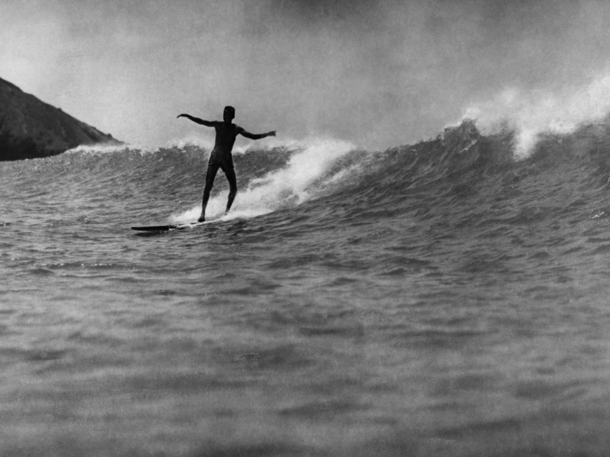
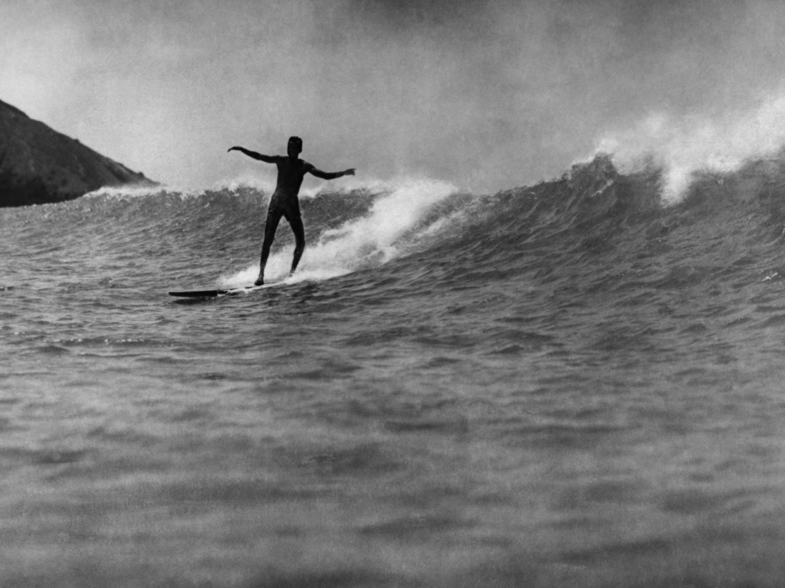
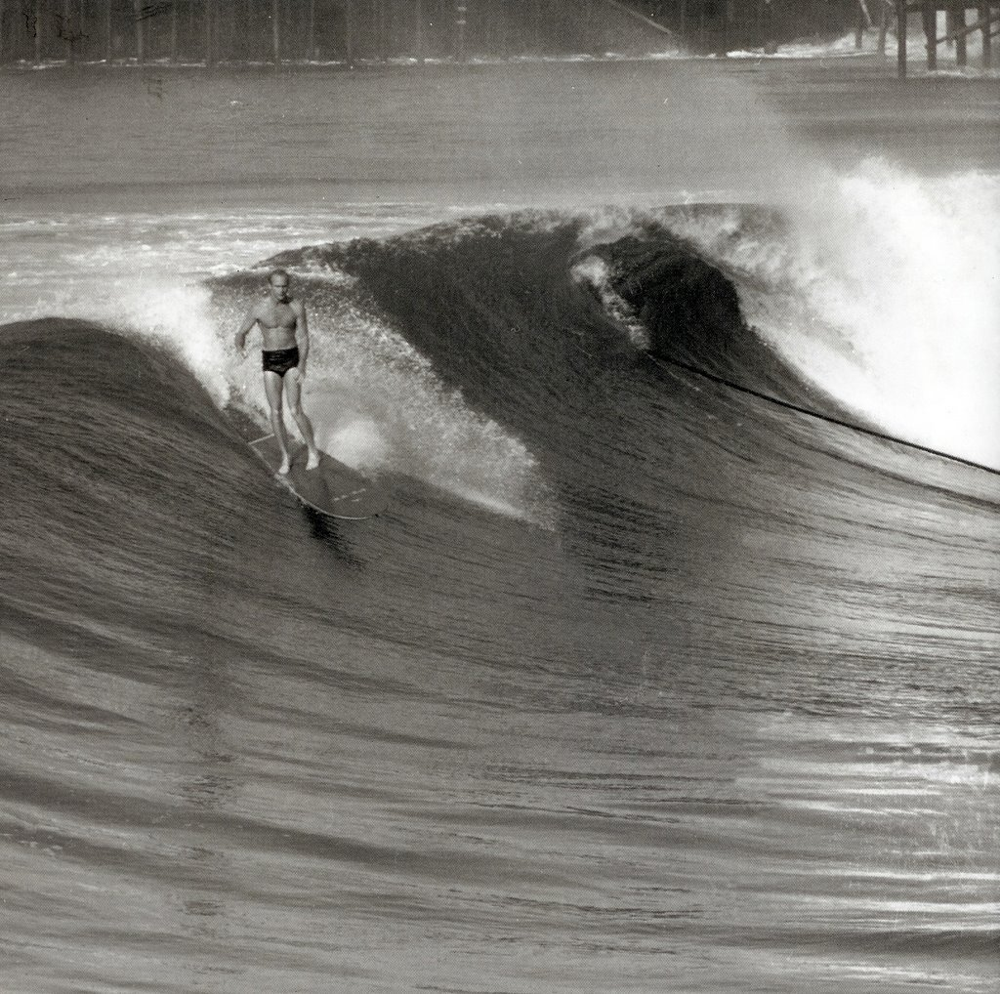
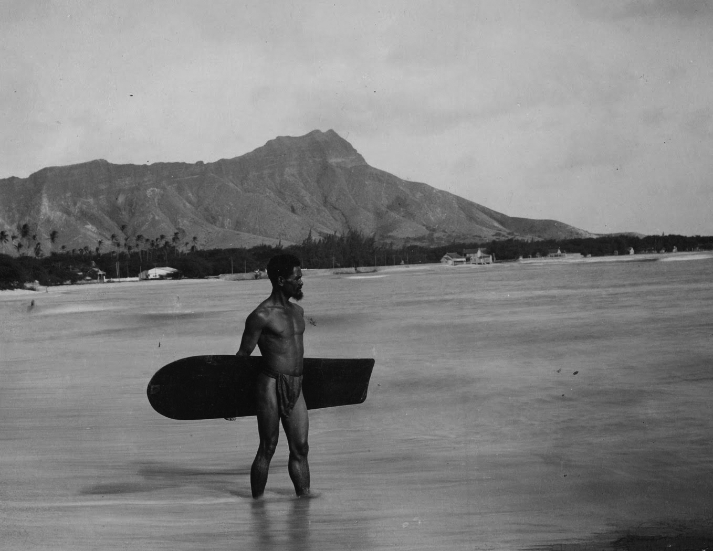
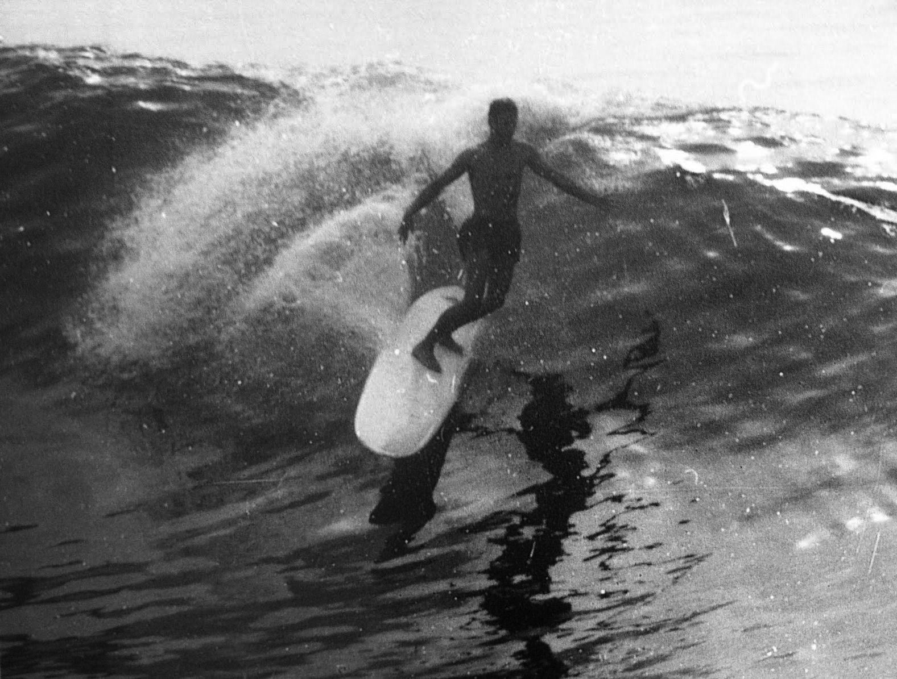

The art of surfing, known as he’e ’ana (he’e means to surf, and ’ana is the nominilizing particle) in the Hawaiian language, was recorded by Joseph Banks aboard HMS Endeavour during the first voyage of James Cook, during the ship's stay in Tahiti. Surfing was a central part of ancient Polynesian culture and predates European contact. The chief (Ali'i) was traditionally the most skilled wave rider in the community with the best board made from the best wood. The ruling class had the best beaches and the best boards, and the commoners were not allowed on the same beaches, but they could gain prestige by their ability to ride the surf on their boards. In Tahiti and Samoa surfing was a popular pastime that was often used as part of warriors training. Warriors often paddled to surf breaks and were recorded by early European historians in print as spending many hours bravely paddling head on into large surf and riding waves. Canoes often accompanied surfing parties and the men would often swap between canoeing, paddling boards and catch fish after their recreational activities. In Hawai'i Surfing became more of a spiritual pastime and became ingrained into the very fabric of Hawaii'an religion and culture. The sport was also recorded in print by other European residents and visitors who wrote about and photographed Samoans surfing on planks and single canoe hulls; Samoans referred to surf riding as fa'ase'e or se'egalu. Edward Treager also confirmed Samoan terminology for surfing and surfboards in Samoa. Oral tradition confirms that surfing was also practiced in Tonga, where the late king Taufa'ahau Tupou IV was the foremost Tongan surfer of his time.
The practice of riding a vessel with a wave was practiced since the Pre-Incan civilization (Mochica/Moche culture) around 2000 years ago and continued in the Chimu culture. The vessels the Mochica people used were called “Caballitos de Totora”, (“Straw SeaHorses”). Although the Mochica used the Caballitos de Totora for fishing purposes, it is also possible that they were used for fun, as their archaeology suggests. It is also likely that the Mochica people did in fact “surf for fun” given that the longest rideable wave of world “Chicama” was within their empire. Chicama is located in Puerto Malabrigo, La Libertad, close to the city of Trujillo, Peru. To this day Caballitos de Totora are still used by local fishermen and can be also be ridden by tourists for recreational purposes. It is questioned whether this is the first observed form of surfing, given that the Mochica/Chimu also used a paddle/stick to displace themselves in the ocean, thus the Caballito de Totora has a closer resemblance to Stand-Up Paddle boarding than surfing.
The Ancient Hawaiian people did not consider surfing a mere recreational activity, hobby, extreme sport, or career as it is viewed today. Rather, the Hawaiian people integrated surfing into their culture and made surfing more of an art than anything else. They referred to this art as heʻe nalu which translates into English as “wave sliding.” The art began before entering the mysterious ocean as the Hawaiians prayed to the gods for protection and strength to undertake the powerful mystifying ocean. If the ocean was tamed, frustrated surfers would call upon the kahuna (priest), who would aid them in a surfing prayer asking the gods to deliver great surf. Prior to entering the ocean, the priest would also aid the surfers (mainly of the upper class) in undertaking the spiritual ceremony of constructing a surfboard. Hawaiians would carefully select one of three types of trees. The trees included the koa (Acacia koa), ’ulu (Artocarpus altilis), and wiliwili (Erythrina sandwicensis) trees. Once selected, the surfer would dig the tree out and place fish in the hole as an offering to the gods. Selected craftsmen of the community were then hired to shape, stain, and prepare the board for the surfer. There were three primary shapes: the ’olo, kiko’o, and the alaia. The ’olo is thick in the middle and gradually gets thinner towards the edges. The kikoʻo ranges in length from 12–18 feet (3.7–5.5 m) and requires great skill to maneuver. The alaia board is around 9 feet (2.7 m) long and requires great skill to ride and master. Aside from the preparatory stages prior to entering the water, the most skilled surfers were often of the upper class and pastors,[please clarify] including chiefs and warriors that surfed amongst the best waves on the island. These upper class Hawaiians gained respect through their enduring ability to master the waves and this art the Hawaiians referred to as surfing. Some ancient sites still popular today include Kahaluʻu Bay and Holualoa Bay.
After contact with the Western World Hawaiian culture was forced to change. Western diseases spread and colonization began, plantations were built, and immigration started. Local Hawaiians, mixed with imported workers from Asia, were put to work on sugar plantations and Protestant missionaries attempted to turn the population from their traditional beliefs into Christians. Along with the suppression of traditional culture was the suppression of surfing, often viewed as frivolous. It was not until Waikiki became a tourist destination that surfing began a resurgence in popularity. Particularly wealthy Americans came to the beach and saw the locals occasionally surfing what had long been an established surf break, Waikiki, and wanted to try it. Mark Twain attempted it but failed in 1866. Jack London tried it while visiting, then chronicled it enthusiastically in an essay entitled "A Royal Sport" published in October of 1907. In 1908 Alexander Hume Ford founded the Outrigger Canoe and Surfing Club the first modern organization developed to promote surfing broadly, although it was de facto whites-only and women weren't admitted until 1926. Local Hawaiians started their own club in 1911 called Hui Nalu, meaning "Club of the Waves". But the first surf icons who gained widespread recognition, George Freeth and Duke Kahanamoku, became famous for practicing their traditional sport and helped spread it from Waikiki to around the world.
In July 1885, three teenage Hawaiian princes took a break from their boarding school, St. Mathew’s Hall in San Mateo, and came to cool off in Santa Cruz, California. There, David Kawananakoa, Edward Keliʻiahonui and Jonah Kūhiō Kalaniana'ole surfed the mouth of the San Lorenzo River on custom-shaped redwood boards, according to surf historians Kim Stoner and Geoff Dunn.[4] In 1907 George Freeth was brought to California from Hawaii, to demonstrate surfboard riding as a publicity stunt to promote the opening of the Los Angeles-Redondo-Huntington railroad owned by Henry Huntington, who gave his name to Huntington Beach. Freeth surfed at the Huntington Beach pier and travelled up and down the coast demonstrating surfing and life guard skills. Surfing on the East Coast of the United States began in Wrightsville Beach, North Carolina in 1909 when Burke Haywood Bridgers and a colony of surfers introduced surfing to the East Coast. The State of North Carolina honored Burke Haywood Bridgers and the colony of surfers by placing a North Carolina Highway Marker for PIONEER EAST COAST SURFING on Wrightsville Beach and designated Wrightsville Beach as the birthplace of surfing in North Carolina in 2015. North Carolina has the greater weight of published verifiable accurate evidence and impacts a broader geographical area when compared to other east coast states. Burke Haywood Bridgers and the colony of surfers activities are among the earliest appearances of surfboards in the Atlantic Ocean. The early twentieth century surfers proved that surfing migrated from Hawaii to California and North Carolina about the same time, then Florida. The Wrightsville Beach Museum Waterman Hall of Fame honors, recognizes, and inducts community members for their contributions to the island’s watersport culture.
In 1910, Tommy Walker returned to Manly Beach, Sydney, with a 305 cm (10 ft) surfboard "bought at Waikiki Beach, Hawaii, for two dollars."[9] Walker became an expert rider and in 1912 gave several exhibitions in Sydney. Surfboard riding received national exposure with the exhibitions by Hawaiian Duke Kahanamoku in the summer of 1914-1915 at several Sydney beaches. As a current Olympic sprint champion, Kahanamoku was invited to tour the Eastern states for an extensive series of swimming carnivals and at his first appearance in the Domain Pool, Sydney, smashed his previous world record for 100 yards by a full second. Following the first exhibition at Freshwater on 24 December 1914, in the New Year Kahanamoku demonstrated his skill at Freshwater and Manly, followed by appearances at Dee Why and Cronulla. Duke Kahanamoku's board is now on display in the Freshwater Surf Life Saving Club, Sydney, Australia.